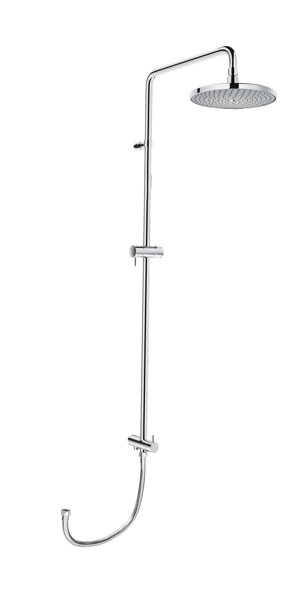

Cây sen tắm BFV-CL2 là thiết bị vệ sinh cao cấp thuộc thương hiệu INAX đến từ Nhật Bản với thiết kế vô cùng hiện đại và chất lượng hàng đầu, mang đến trải nghiệm tắm thư giãn và thoải mái. Sản phẩm không những đáp ứng tiêu chuẩn về công nghệ, đảm bảo an toàn cho người sử dụng mà còn góp phần nâng tầm không gian nhà tắm của bạn.Thiết kế của cây sen tắm BFV-CL2Thiết kế tối giản, hiện đại, mang lại vẻ đẹp thanh thoát, giúp không gian phòng tắm trở nên rộng rãi hơn.Thiết kế sen tắm BFV-CL2 dạng nổi, dễ dàng lắp đặt mà không cần can thiệp sâu vào kết cấu tường.Chất liệu cao cấp với lớp mạ Crom-Niken dày dặn giúp bề mặt sen luôn sáng bóng, chống ăn mòn hiệu quả và dễ dàng vệ sinh.Bát sen lớn mang lại trải nghiệm tắm thư giãn như dưới mưa. Ngoài ra, sản phẩm còn được trang bị bát và tay sen với khớp trượt linh hoạt, cho phép điều chỉnh độ cao và hướng phun, phù hợp với nhiều nhu cầu sử dụng khác nhau.Sen có thể kết hợp với nhiều loại củ sen trên thị trường, đặc biệt là củ sen của INAX để tạo sự đồng bộ và hài hòa.Tính năng nổi bật của cây sen tắm BFV-CL2Công nghệ Thermostat cân bằng nhiệt tự động: Sen cây tắm đứng BFV-CL2 được tích hợp lõi trộn nhiệt Thermostat hiện đại, giúp duy trì nhiệt độ nước ổn định, tránh tình trạng thay đổi nhiệt độ đột ngột, đồng thời hạn chế tối đa nguy cơ bỏng khi chỉnh nước ở nhiệt độ cao.Điều chỉnh nhiệt độ nhanh chóng với một nút xoay: Cụm điều khiển được thiết kế tối giản, chỉ cần một thao tác xoay nhẹ nhàng là có thể điều chỉnh nhiệt độ mong muốn. Cách vận hành đơn giản, mượt mà, dễ sử dụng cho cả trẻ em và người lớn tuổi, mang lại sự tiện lợi trong sinh hoạt hằng ngày.Video giới thiệu sen tắm INAXBản vẽ cây sen tắm BFV-CL2Xem chi tiết hướng dẫn lắp đặt tại đây.Thông số kỹ thuậtChất liệuVan điều khiển làm bằng sứ, lớp mạ Cr-Ni dày dặnKiểu dángCây sen đứngTính năng- Chống ăn mòn, chống bám bụi và cặn bẩn, khó xỉn màu, giữ độ bền và sáng bóng lâu dài - **Công nghệ Thermostat**: Giúp cân bằng và duy trì nhiệt độ nước ổn định, đảm bảo an toàn, hạn chế nguy cơ bỏng - Điều chỉnh nhiệt độ nhanh chóng chỉ với một nút xoay nhẹ nhàng, dễ dàng thao tácThương hiệuINAXThiết kế- Cây sen tắm đứng tiện ích, phù hợp với vách kính - Bát sen lớn hình tròn cho dòng nước ôm trọn cơ thể - Có khả năng điều chỉnh độ cao của móc treo - Lớp mạ Crom/Niken sáng bóng, bền lâu - Van chuyển hướng bằng sứ có độ bền cao, chống rò rỉMàu sắcBạcKhác- Miễn phí hỗ trợ, tư vấn về sản phẩm và dịch vụ của INAX nhanh gọn, nhiệt tình - Hotline tư vấn: 18006633Video giới thiệu về lịch sử INAX
Cây sen tắm BFV-CL2
Phụ kiện thương hiệu INAX.
Đã cập nhật danh sách yêu thích.
DANH MỤC: Phụ kiện
MÃ SẢN PHẨM: BFV-CL2
DEPTH: mm
HEIGHT: mm
WIDTH: mm
Cây sen tắm BFV-CL2 là thiết bị vệ sinh cao cấp thuộc thương hiệu INAX đến từ Nhật Bản với thiết kế vô cùng hiện đại và chất lượng hàng đầu, mang đến trải nghiệm tắm thư giãn và thoải mái. Sản phẩm không những đáp ứng tiêu chuẩn về công nghệ, đảm bảo an toàn cho người sử dụng mà còn góp phần nâng tầm không gian nhà tắm của bạn.Thiết kế của cây sen tắm BFV-CL2Thiết kế tối giản, hiện đại, mang lại vẻ đẹp thanh thoát, giúp không gian phòng tắm trở nên rộng rãi hơn.Thiết kế sen tắm BFV-CL2 dạng nổi, dễ dàng lắp đặt mà không cần can thiệp sâu vào kết cấu tường.Chất liệu cao cấp với lớp mạ Crom-Niken dày dặn giúp bề mặt sen luôn sáng bóng, chống ăn mòn hiệu quả và dễ dàng vệ sinh.Bát sen lớn mang lại trải nghiệm tắm thư giãn như dưới mưa. Ngoài ra, sản phẩm còn được trang bị bát và tay sen với khớp trượt linh hoạt, cho phép điều chỉnh độ cao và hướng phun, phù hợp với nhiều nhu cầu sử dụng khác nhau.Sen có thể kết hợp với nhiều loại củ sen trên thị trường, đặc biệt là củ sen của INAX để tạo sự đồng bộ và hài hòa.Tính năng nổi bật của cây sen tắm BFV-CL2Công nghệ Thermostat cân bằng nhiệt tự động: Sen cây tắm đứng BFV-CL2 được tích hợp lõi trộn nhiệt Thermostat hiện đại, giúp duy trì nhiệt độ nước ổn định, tránh tình trạng thay đổi nhiệt độ đột ngột, đồng thời hạn chế tối đa nguy cơ bỏng khi chỉnh nước ở nhiệt độ cao.Điều chỉnh nhiệt độ nhanh chóng với một nút xoay: Cụm điều khiển được thiết kế tối giản, chỉ cần một thao tác xoay nhẹ nhàng là có thể điều chỉnh nhiệt độ mong muốn. Cách vận hành đơn giản, mượt mà, dễ sử dụng cho cả trẻ em và người lớn tuổi, mang lại sự tiện lợi trong sinh hoạt hằng ngày.Video giới thiệu sen tắm INAXBản vẽ cây sen tắm BFV-CL2Xem chi tiết hướng dẫn lắp đặt tại đây.Thông số kỹ thuậtChất liệuVan điều khiển làm bằng sứ, lớp mạ Cr-Ni dày dặnKiểu dángCây sen đứngTính năng- Chống ăn mòn, chống bám bụi và cặn bẩn, khó xỉn màu, giữ độ bền và sáng bóng lâu dài - **Công nghệ Thermostat**: Giúp cân bằng và duy trì nhiệt độ nước ổn định, đảm bảo an toàn, hạn chế nguy cơ bỏng - Điều chỉnh nhiệt độ nhanh chóng chỉ với một nút xoay nhẹ nhàng, dễ dàng thao tácThương hiệuINAXThiết kế- Cây sen tắm đứng tiện ích, phù hợp với vách kính - Bát sen lớn hình tròn cho dòng nước ôm trọn cơ thể - Có khả năng điều chỉnh độ cao của móc treo - Lớp mạ Crom/Niken sáng bóng, bền lâu - Van chuyển hướng bằng sứ có độ bền cao, chống rò rỉMàu sắcBạcKhác- Miễn phí hỗ trợ, tư vấn về sản phẩm và dịch vụ của INAX nhanh gọn, nhiệt tình - Hotline tư vấn: 18006633Video giới thiệu về lịch sử INAX
DANH MỤC: Phụ kiện
MÃ SẢN PHẨM: BFV-CL2
DEPTH: mm
HEIGHT: mm
WIDTH: mm